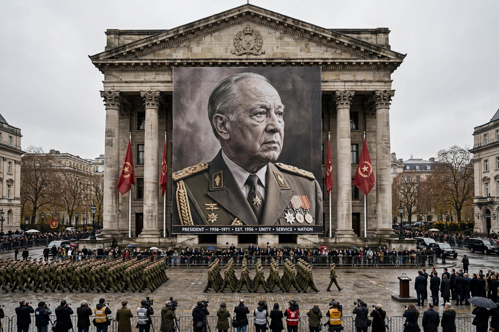

Cult of personality
From Wikipedia, the free encyclopedia

A cult of personality arises when a regime uses mass media, propaganda, spectacle and repression to create an idealised, heroic and worshipful image of a political leader. The term was crystallised by Nikita Khrushchev's 1956 'Secret Speech' denouncing Stalin's cult; classic cases include Hitler, Mao, Kim Il-sung (whose cult, institutionalised in North Korean Juche, is hereditary), Ceaușescu, Saddam Hussein and Turkmenbashi's rotating golden statues.
Mechanics
Cults saturate: portraits in every room and square, the leader's name on cities and months (Turkmenbashi renamed January for himself), his thought as curriculum, his biography as sacred text (the Ruhnama), ritual applause and calendar feasts. Sociologists treat the cult as charismatic authority routinised into theatre — compliance performed publicly regardless of private belief, which is precisely its disciplining function.
Diagnosis and debate
Khrushchev's speech framed the cult as a deviation from collective leadership; later analysis (from Arendt to Havel's greengrocer) sees it as totalitarianism's normal output, and liberal democracies debate softer analogues — celebrity presidencies, founder worship — where media rather than police do the saturating. Cults rarely survive their objects intact: de-Stalinisation, and post-Mao China's term limits (until their abolition), are the standard counter-moves.